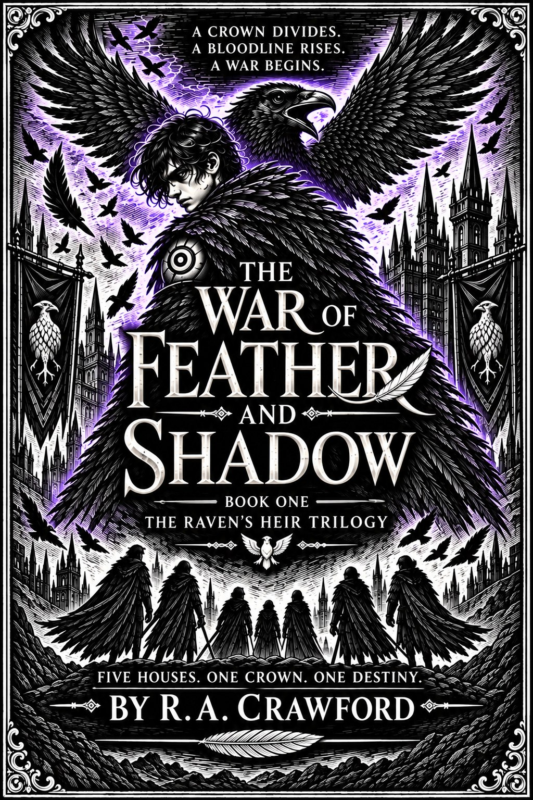

Is The War of Feather & Shadow written for adult readers?
Yes. The novel is an adult dark and epic fantasy story. Its academy setting is part of a broader political and fantasy world.

Reader Guide · Academy Fantasy
An academy setting can do much more than provide classrooms and competitions. For adult fantasy readers, it can become a concentrated version of the wider world: its class system, politics, violence, ambitions, prejudices and secrets all forced into one place.
The strongest academy fantasies treat education as part of a larger power structure. Training matters because students are being prepared to become soldiers, scholars, diplomats, leaders or weapons. Friendships and rivalries carry consequences beyond school walls, and what is taught can be just as revealing as what has been removed from the curriculum.
That combination creates a useful tension between discovery and control. Characters gain access to knowledge while gradually learning that the institution deciding what counts as knowledge may have its own reasons for hiding the truth.
Aethelmar Academy sits inside the Aerie Dominion rather than apart from it. Its Houses reflect political identities that already shape the wider world. Students arrive carrying family names, expectations and inherited loyalties, while Kael arrives with none of the protections that normally come with status.
As he moves deeper into academy life, hidden records and old symbols begin to challenge the official history around him. The academy therefore becomes both a place of training and the doorway into a much larger mystery.
The War of Feather & Shadow begins close to Kael and the people around him, but the story is designed to widen beyond the academy. The Raven’s Heir Trilogy connects personal relationships and House rivalries to questions of inheritance, erased history, ancient power and the future of the Dominion.
That makes the academy an entry point rather than the limits of the setting. Readers who enjoy exploring maps, factions, myths and hidden lore can continue into the wider Project Avis world after reading the novel.
Reader Questions
Yes. The novel is an adult dark and epic fantasy story. Its academy setting is part of a broader political and fantasy world.
No. Aethelmar Academy is a major part of the opening world, but the story and trilogy extend across the wider Aerie Dominion.
Yes. The complete first chapter is available free on the official R.A. Crawford website.
Start Reading
Meet Kael in Winterhold and read the complete first chapter of The War of Feather & Shadow before deciding whether to continue.
Read Chapter One FreeBuy Direct from £8.99